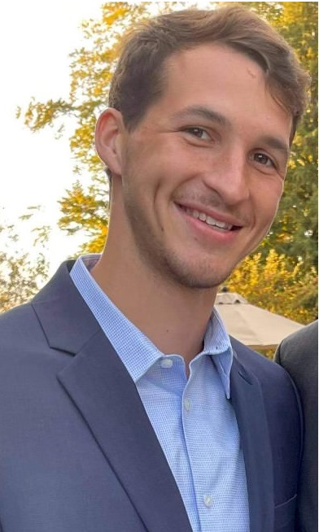

This is a website with information about Cameron Brandt, a recent graduate computer science student from Tennessee Tech
- About- shares a little about my hobbies and interests
- Projects- various projects that I have led or participated in
- DS Projects- data science projects that I've worked on either individually or a part of a team
- Goals- outlines my professional and personal goals
Links


Self Summary
-
As a recent computer science graduate, I have a strong foundation in programming and a passion for data science. I seek to use data to make informed decisions and improve the lives of others. In addition to my interests in computer science and data, I also have a fascination with plant genetics and the fermentation process. I am open minded, and have a willingness to explore and learn about a variety of topics.
-
In addition to my professional goals, I also have personal interests in running and staying physically active. I feel it is important to maintain a healthy and balanced lifestyle. I also enjoy working on separate data science projects on my own time to improve my knowledge and skills. I believe this self-motivated approach is a great way to stay engaged and continually learn and grow in my career outside of work.
-
I plan to work toward becoming a data scientist and furthering my education in data science after some work experience with the intention of learning from a more experienced perspective and a better grasp of the expectation of the work environment.